Айс? Еще какой!!!
( или как мы с тетками 23 февраля отмечали )
- 21 - 23 февраля 2009 -
На 23 февраля мы небольшой компанией, состоящей большей частью из девушек,
отправились кататься на коньках. Да не на каток, как вы могли подумать,
а из Большого Голоустного в Листвянку. С палатками, санками и большими
рюкзаками. Водитель автобуса долго ворчал и обещал отдать наши санки детям
в Малом Голоустном. Неее, шутите? Нам еще на них вещи везти! Приехали
мы в БГ вечером, поэтому решили там и заночевать, а с утра уже отправляться
в путь. Поставили палатки.
Стемнело. Сидели мы так у костра, уже и покушать сварили, и поели, ну
чем еще заняться? Холодно, поэтому в палатку идти совсем не хочется. Ну
точно! Берем коньки и вниз - кататься под звездами. Очень романтично.
Коньки замерзли, на ногах по 3 пары носок (носков), поэтому сложно эти
самые коньки натянуть на ноги. Звуки при этом в ночной тиши стояли такие,
что с берега нас спросили, чем мы собственно занимаемся… Это уже не романтика
:)
Кататься ночью здорово и страшно. Проезжает машина по льду. Дальний свет
и ощущение такое, что ты в мире фэнтэзи, потому что машина полностью отражается
во льду, как в зеркале. Ощущение сказочного пропало, когда водитель остановился
возле нас и спросил: "Что, девчонки, отдыхаете?" Ну, да. А чем
мы еще, по-вашему, занимаемся в 10 вечера на коньках на Байкале? Конечно,
отдыхаем!!! :) А наотдыхавшись отправляемся спать.
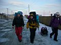 . . 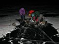 . . 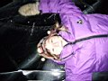 . . 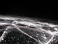
Утром я встала первая - чтобы в предрассветных сине-черных сумерках развести
костер и растопить лед (нет, не в сердцах, все гораздо прозаичнее) для
того, чтобы вскипятить воду на чай и завтрак. Как оказалось, кто-то на
восточном берегу Байкала в районе Мамая тоже встал очень рано, топил печь
и варил чай ;) Ну а я в компании черного пса, который еще вчера увязался
за нами, встретила рассвет. Сонно-ленивое розовое солнце кое-как пробилось
через серую пелену, и вот оно - начало нового дня.
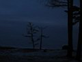 . . 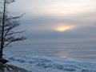 . . 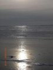 . . 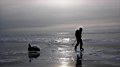
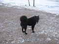 . . 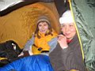 . . 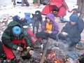 . . 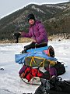
Проснулась Ксюха, помогла сварить завтрак. Потом встали и остальные ребята.
Строфа ворчит - чего это руки так мерзнут. А Лена из палатки: у меня на
градуснике -25. Ааа, ну тогда понятно, чего так холодно.
Позавтракали. Мы совсем недавно обнаружили, что сгущенку стали продавать
в пластиковых упаковках. Не экологично, конечно, но явно удобнее и легче
по весу. Вот только чтоб выдавить эту сгущенку при -25 нам пришлось греть
и ее, и кетчуп у Ксюхи за пазухой. Она у нас женщина горячая! :)
Собираем палатки, вещи, и - в путь! Пес еще недолго бежит за нами вдоль
берега, но мы все удаляемся от берега. Он не выходит на лед, боится, наверное.
Или коньков у него просто нет…
Строфа угощает нас мандаринками - яркие солнышки на морозном сером льду
- начинается фотосессия, а я не удерживаюсь - у замерзших мандаринок особый
вкус. Эх, облизнулась.
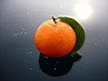 . .  . . . . 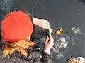 . . 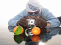
Лед словно зеркало, коньки едут как по маслу, удовольствия столько! Глаз
радуют красивые узоры на льду и во льду. Байкал под ногами трещит, мы
визжим каждый раз, но еще страшнее, когда трещина пробегает прямо между
твоих ног. Маленькая конечно, не опасная, но адреналин вырабатывается
с быстротой этой самой трещины, появляющейся буквально на глазах.
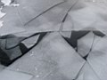 . . 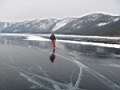 . . 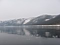 . . 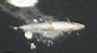
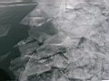 . . 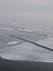 . . 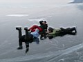 . . 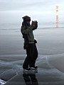 . . 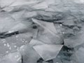
Дядя Миша Мангаскин, житель Большого Голоустного, про эти трещащие и
ухающие под ногами звуки пару лет назад сказал "Это Байкал дышит".
С тех пор и ассоциации у меня такие - живой. И зимой. Раз это он просто
дышит так, значит и бояться нечего.
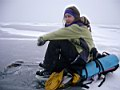 . . 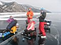 . . 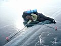 . . 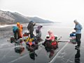
Едем так не торопясь, потому что я толком на коньках ездить не умею (там
и научусь, думала я, собирая рюкзак), у Ани ноги заболели, у Славы та
же проблема, что и у меня. Строфа со Степкой, получив заманчивое предложение
уехать сразу в Ангарск и на машине, решили ехать до Листвянки нон-стоп,
а мы стали присматривать место для ночевки. Эх, на этот раз Ксюхина идея
добраться до Листвянки за день накрылась медным тазом.
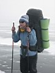 . . 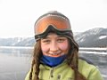 . . 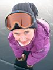 . . 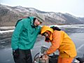
Ира, Оля, Надя, Степка и Юля-Катастрофа (Строфа)
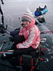 . . 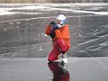 . . 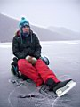 . . 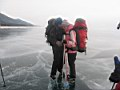
Аня, Лена, Ксюха, Слава и Аня
Уже Большие Коты, каждая падь и ручеек тут знакомы. Интересно посмотреть
на скалу Скрипер с воды. Впечатляет! Решили ночевать в Солонцовой - там
отлично обустроенная стоянка. Родное место - я тут как-то безвылазно провела
24 (!) дня подряд. Летом правда, а то со снегом все по-другому выглядит.
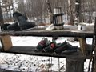 . . 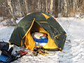 . . 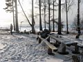 . . 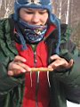
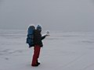 . . 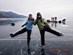 . . 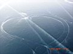
Ксюха тут вдруг вздумала поворчать, что никогда больше не пойдет в поход
без парней - все самой надо делать - дрова пилить-рубить, костер поддерживать.
"Приеду - всем расскажу, что я не ныла, как обычно, а все сама делала!!!".
Связь тут ловит, поэтому, когда вечером ей друг позвонил, он услышал душещипательную
историю о Ксюхе - добром молодце. :)
Вечером девчонки сварили глинтвейн, на который меня уже просто не хватило,
и я легла спать. А на градуснике в эту ночь -20. Смеемся: потеплело!
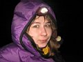 . . 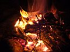 . . 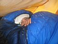 . . 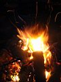
Утром поздравила всех с 23 февраля, конфетками Ферреро Роше. Допила прохладный
глинтвейн, который девчонки мне вчера в термосе оставили - такой вкусный
оказался!
Вышли на лед - и не смешно совсем стало - ветер так сильно дует в лицо,
что если остановишься, то обратно сдувает! Не, нам обратно-то не надо.
Вот она борьба со стихией! А местами еще и приходилось перебираться через
ледяные торосы.
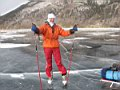 . . 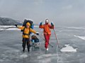 . . 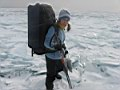 . .
А когда мы добрались до Листвянки, одни люди в некотором недоумении смотрели
на нас, а другие фотографировали детей на фоне Нади с санками. Много других
забав в Листвянке - на судне на воздушной подушке катают, на квадроциклах…
а тут мы-чудо какое-то с огромными рюкзаками и на коньках. Как с другой
планеты. Все, срочно домой! Шумно и людно тут как-то.
Фото: Ольга Михалёва
Февраль апрель 2009
|